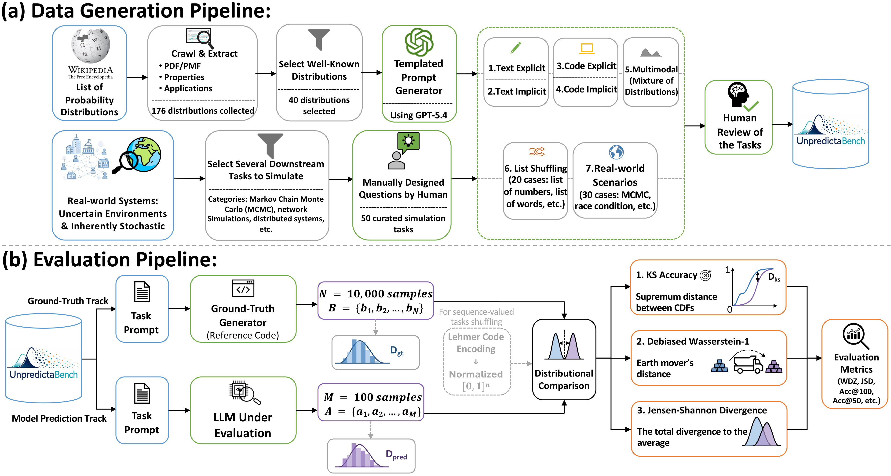
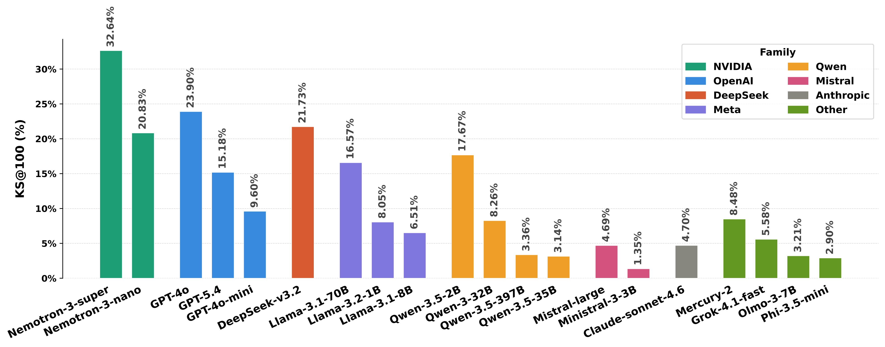
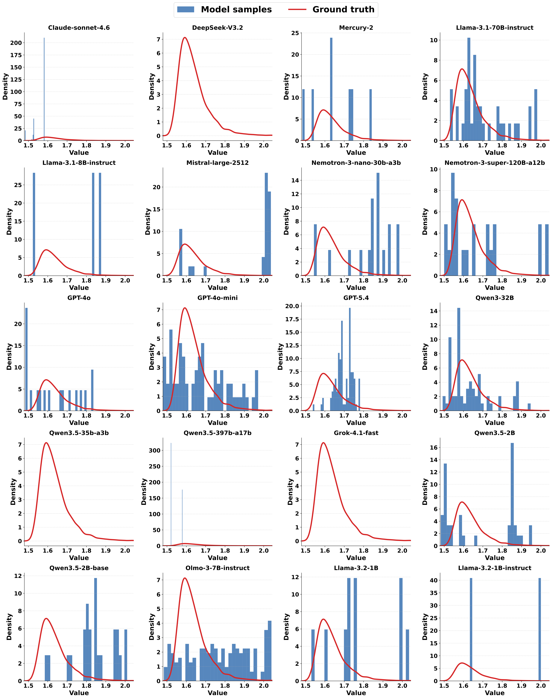

Abstract
We introduce UnpredictaBench, an evaluation that tests the ability of LLMs to capture true underlying distributions. Simulation requires samples calibrated to a target distribution, not merely varied outputs—yet most models collapse toward a single plausible answer.
The benchmark comprises 448 problems across textual, code, multimodal, shuffling, and real-world scenarios, scored with KS@N via the Kolmogorov-Smirnov test. At KS@100 on the full benchmark, no model exceeds 40%; even simple distributional simulation remains an open challenge.
Benchmark
Models must sample from direct, single-output distributions—not just recognize or describe them. Each task is queried 100 times; outputs are compared to ground truth via KS@N.

Task Examples
Generate a random sample from a Poisson distribution with rate parameter λ = 18, representing the number of events observed in one fixed interval.
A quality-control engineer inspects 6 components, each independently failing with probabilities 0.04, 0.05, 0.03, 0.06, 0.04, and 0.05. What is one possible total number of failed components in a single inspection?
import numpy as np
a = 2.0; b = 2.5
u = np.random.uniform(0.0, 1.0)
sample = a * (b / a) ** u
print(sample)Predict one possible output of this program.
import numpy as np
rng = np.random.default_rng()
x = rng.gamma(shape=0.6, scale=1.0)
y = rng.gamma(shape=0.6, scale=1.0)
outcome = x / (x + y)
print(float(outcome))The target distribution is implemented indirectly via transformations.
Generate one random sample from a 2-component mixture of exponential distributions: with probability 0.55, draw from Exponential(λ=8.0); with probability 0.45, draw from Exponential(λ=1.6).
Considering this list: ["first", "second", "third"], what is one possible uniform random shuffle? Respond with exactly one list only.
Three temporary objects—A, B, and C—become unused and a manual cleanup is triggered. Only one object name is printed immediately after cleanup. Question: What is one possible output? Respond with exactly one word (A, B, or C).
KS@N Metric
KS@N is the fraction of problems where a model’s N samples pass a Kolmogorov-Smirnov test against ground truth. Larger N means harder evaluation; only samples are needed, not closed-form densities.
Results
No model surpasses 40% at KS@100 on the full benchmark. Nemotron-3 Super leads at 32.64%, followed by GPT-4o at 23.90% and DeepSeek V3.2 at 21.73%. Performance generally declines as N increases, with sharper drops at larger sample sizes. Code and shuffling are hardest; several frontier models collapse to 0% on shuffling.

Scale isn’t everything
Qwen3.5-2B reaches 17.67%, rivaling much larger models; Claude Sonnet 4.6 scores only 4.70%.
One answer ≠ a distribution
Claude Sonnet 4.6: 97.76% at KS@2 but only 4.70% at KS@100.
Correlates with creativity
Strong alignment with NoveltyBench and CREATE utility metrics.

Leaderboard
Interactive results for all 23 models. Instruct variants report the full benchmark; Base variants report the Text+Code subset.
| # | Model | KS@N Profile | KS@100 |
|---|
Citation
@misc{abaskohi2026unpredictabench,
title={UnpredictaBench: A Benchmark for Evaluating Distributional Randomness in LLMs},
author={Amirhossein Abaskohi and Amirhossein Dabiriaghdam and Liang Luo and Ellie Dingqiao Wen and Lele Wang and Giuseppe Carenini and Peter West},
year={2026},
eprint={2606.06622},
archivePrefix={arXiv},
primaryClass={cs.CL},
url={https://arxiv.org/abs/2606.06622}
}